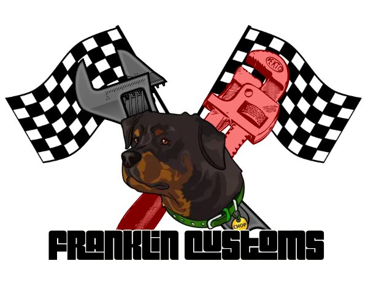
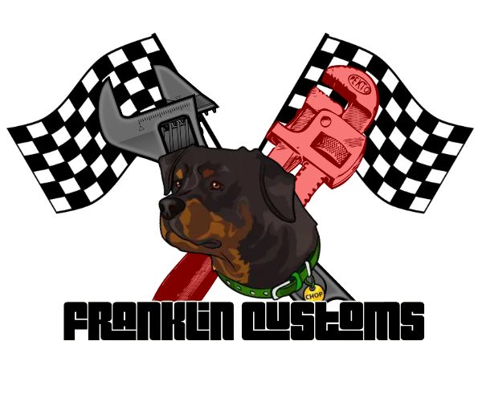

El mejor taller de mecanicos del sur de Los Santos.
Franklin Customs nace de la junta de socios donde le dieron vida a un taller de última tecnología y
eficiencia, pero nunca olvidando las raíces de un pequeño taller en el sur de Los Santos.
Franklin Customs esta inspirado en la en la diversidad de razas, dando la unión en la ciudad y aplicando el
talento nato de cada procedencia.
Nuestro taller tiene como fin entregar un servicio de calidad a la ciudadanía tanto como servicio como de
fuente laboral estable y disponible a la ciudadanía.
La empresa cuenta con precios accesibles a todo público, contamos con convenios de empresas institucionales
y particulares, además servicios de grúa dentro y fuera de la ciudad de Los Santos.
Franklin Customs promueve la conducción segura, con esto incentiva a eventos de carreras preparadas seguras
tanto para los pilotos como para los expectantes.
Como Familia Franklin Custom contamos de 8 maestros profesionales para brindar el mejor trabajo, donde
tenemos capacitaciones de mecánica intermedia a avanzada, y así capacitar a nuevo personal para incluirse en
este hermoso oficio.
Con la Gran llegada de Franklin Customs. La gerencia hizo contactos con una empresa de aceites de motores
de la misma ciudad donde le brindaron auspicio como taller dándoles un lindo uniforme de trabajo distintivo
a cambio de utilizar los aceites y lubricantes HVY.
Ya instalados en la Ciudad de Los Santos, Franklin Customs fue tomando mayor experiencia y trayectoria, así
haciendo más amigos y alcanzando nuevas metas.
La primera de ellas fue subir a la ranking de las mejores
empresas de la ciudad, donde subimos de categoría, posicionándonos en ligas mayores.
Al estar en esa
liga todo era más difícil donde la ley nos permitía tener mayor cantidad de gente y poder dominar mayor
técnicas y habilidades de mecánica.
Con esto en una reunión se llevo a cabo de abrir nuevas postulaciones a
nuestro cuerpo de mecánicos.
Con éxito, fuimos avanzando y escalando en la categoría 3, donde el 21/02/2022
por la madrugada llega un mensaje al correo de la empresa dando las felicitaciones por obtener la nueva
concesión del taller N°9 de la ciudad ubicándose detrás del hospital general de Los Santos.
 
